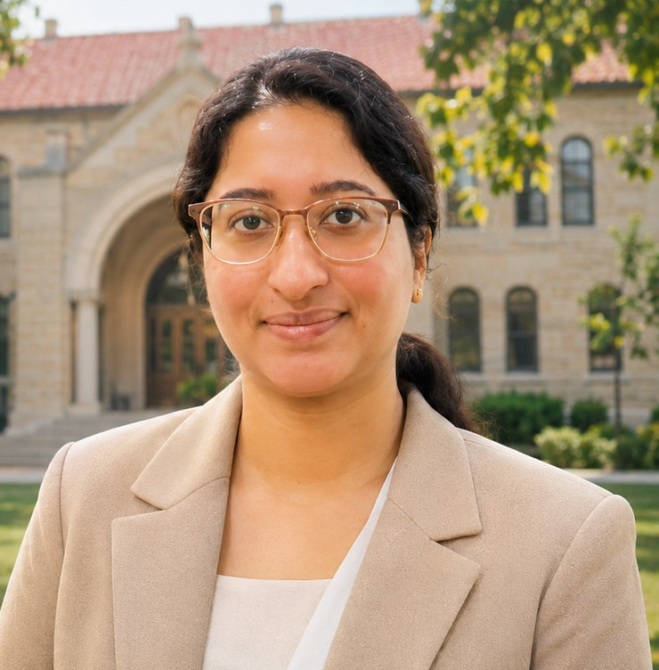

Research
Numerical methods, computational mathematics and interdisciplinary inquiry.
Explore →SAUMYA PUTHENVEETTIL · ACADEMIC PORTFOLIO
An interdisciplinary academic journey spanning mathematics, engineering and research.

INTRODUCTION
My academic background brings together applied mathematics, biomedical engineering, mechanical engineering and computational research. I am interested in interdisciplinary problem solving and sharing knowledge through teaching.
This portfolio brings together my education, publications, and academic interests. I also represent Indian employees; the official scope of this role will be added when confirmed.